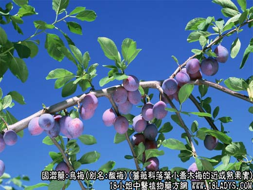
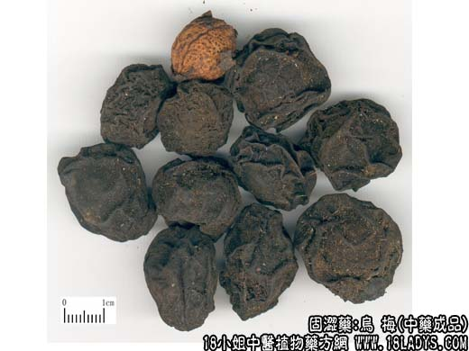
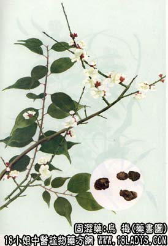

乌梅为较常用中药。始载《神农本草经》，列为中品。
别名：酸梅。
来源：为蔷薇科植物落叶小乔木梅的近成熟果实，经烟火熏烤干燥而成。多为栽培。
产地：主产于四川、浙江、福建、广东此外湖南、湖北、贵州等地亦有生产。
性状鉴别：乌梅呈不规则的圆球形，直径1.5~3厘米。表面黑褐色，皱缩不平，一端有凹脐状果柄痕。果肉柔韧，可以与果核剥离。核坚硬，类球形，黄棕色，表面不平滑，有多数麻点小凹坑，肉含种仁一粒，与杏仁相似，气特异，果肉味极酸。
以个大，肉厚，黑褐色为佳。
主要成分：含柠檬酸、固缁醇和齐墩果酸样物质。
功效与作用：敛肺、涩肠、生津，其原理为镇咳、祛痰、消炎、止泻、解热，并有下列作用：
1、抗菌，能抑制痢疾杆菌等肠道致病菌和乙种溶血性链球菌。
2、抗真菌体外试验对絮状表皮癣菌有较强抑制作用。
3、抗过敏，能减低试验动物蛋白质过敏性休克的死亡数目。
炮制：生用或去核用肉及炒炭。
性味：酸涩，温。
归经：入肺、脾、大肠经。
功能：敛肺，涩肠，生津止渴，安蛔。
主治：久咳、久泻、久痢便血，蛔厥，烦渴，呕吐等症。
1、用于止痢。主要取其能收敛止泻，但其抗菌作用也不容忽视。乌梅对久痢（尤其血痢）较为合适，因久痢常会伤阴，出现口渴、咽干，甚至加杂咳嗽等症状，乌梅（用炒乌梅或乌梅炭）在止泻的同时，又能生津止嗽，常配川连、黄芩、茯苓、银花等。
2、用于治消化不良、胸脘痞满，取其有健胃作用。常配山楂、神曲、川朴、砂仁。
3、用于安蛔止痛。对于由蛔虫引起的腹痛，乌梅为常用之药，例如治胆道蛔虫症常用乌梅丸。一般驱蛔虫配槟榔、榧子肉。前人认为虫得酸则安，乌梅味酸涩，故能治由蛔虫引起的腹痛。现代研究未发现乌梅有驱虫作用，但发现乌梅对肠管运动有抑制作用。可能因此而有助于解除肠管和总胆管痉挛，使蛔虫退出胆道。
4、用于止血。不仅能治便血，且子宫出血，表现血虚而口干渴者，亦宜用乌梅炭，配当归、阿胶、白芍等。
5、外用乌梅膏治胼胝、鸡眼。先局部用热水泡软，煎去鸡眼老皮，然后涂药，纱布包扎，24小时换药一次。
使用注意：1、乌梅收敛，故外感、热滞，表邢未散者不宜用。
2、乌梅味酸，胃酸过多者慎用。
用量：3～15g。
处方举例：1、乌梅丸加减：乌梅15g，干姜6g，党参9g，槟榔12g，苦楝根皮12g，使君子15g，木香9g，川椒6g，大黄9g，细辛3g，水煎，每日1剂，二次分服。
2、乌梅膏：乌梅30g，入在盐水(食盐9g溶于50毫升开水中)中浸12~24小时，去核取乌梅肉加醋15毫升，研磨成软膏，局部外用。
注：1、按产地划分；浙江的合溪梅、福建的安吉梅个大，肉存，颜色乌黑，品质最好。广东产者个稍小，肉存，品质亦好。四川产者个小肉薄，带红色，又名红梅，品质稍差。其它地区产品多个小，肉薄，核肉紧结，又名岗梅，品质较次。
2、有此地区以同利植物杏或桃的未成熟果实加工成乌梅样，作乌梅出信。其核扁而不圆或核面光滑无麻坑，肉薄而结，味不甚酸。可作清凉饮料用。药用应注意区分。